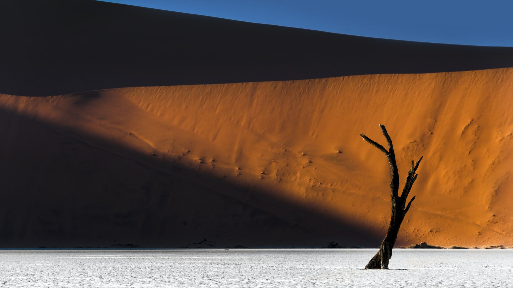
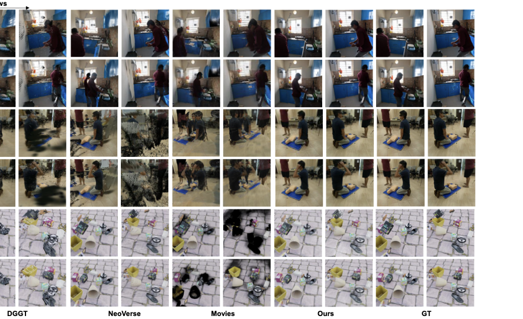

No Pose, No Problem in 4D: Feed-Forward Dynamic Gaussians from Unposed Multi-View Videos
Abstract
Recent feed-forward 3D gaussian splatting methods have made dramatic progress on individual aspects of 3D scene reconstruction, but no existing method jointly addresses dynamic content, multi-view input, and unknown camera poses in a single feed-forward pass. Methods that handle dynamics either require accurate camera poses or accept only monocular input; pose-free multi-view methods address only static scenes; and per-scene optimization methods bridge some of these gaps but at minutes-to-hours cost per scene. We introduce NoPo4D, the first feed-forward system that addresses this empty quadrant. Building on a pretrained geometry backbone and recent 4D Gaussian frameworks, NoPo4D introduces a velocity decomposition that splits Gaussian motion into per-pixel image-plane shifts and depth changes, allowing direct supervision from pseudo ground-truth optical flow on the 2D component. This sidesteps both the differentiable rendering that couples prior posed methods to pose accuracy and the 3D motion ground truth that prior pose-free methods require. The system is rounded out by a bidirectional motion encoder for cross-view and cross-frame feature aggregation, and view-dependent opacity that mitigates cross-view and cross-timestep Gaussian misalignments. On four multi-view dynamic benchmarks, NoPo4D consistently outperforms prior feed-forward baselines, and with an optional post-optimization stage surpasses per-scene optimization methods, while running orders of magnitude faster. Code and the pretrained weights will be made publicly available.
Method
NoPo4D builds on a pretrained depth backbone (Depth Anything 3) extended with cross-view attention layers. For each input frame, per-pixel Gaussians are unprojected from predicted depth maps. A bidirectional motion encoder performs joint self-attention across all cameras and consecutive frames to predict per-Gaussian velocities. Velocities are parameterised as 2D image-plane shifts plus a depth displacement, enabling direct supervision from pseudo-GT optical flow without requiring camera poses or 3D motion ground truth. View-dependent opacity via spherical harmonics compensates for cross-view geometric misalignments inherent in pose-free reconstruction.


Qualitative results on ExoRecon (in-distribution). NoPo4D achieves 29.15 PSNR feed-forward, outperforming all prior baselines.

Out-of-distribution generalization on Immersive Light Field real-world dynamic scenes (21.63 PSNR feed-forward).

Results on the Kubric synthetic benchmark (23.61 PSNR feed-forward, 28.17 PSNR with post-optimization).

Novel view synthesis on N3DV: NoPo4D generalizes to moderate (5.7°–27.7°) and extreme (34.6°–71.9°) viewpoint changes.
Qualitative Results
